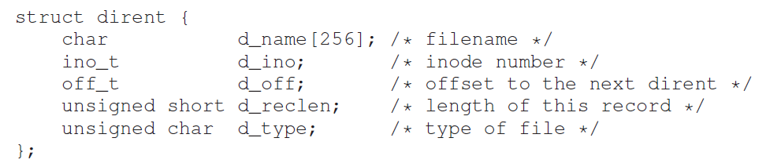
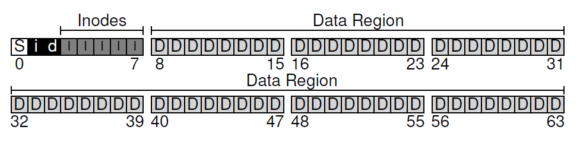
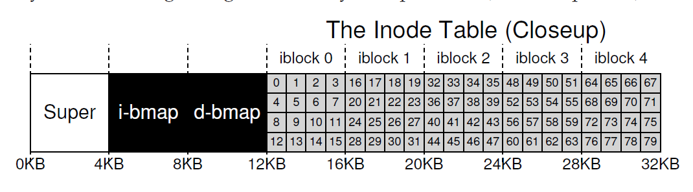
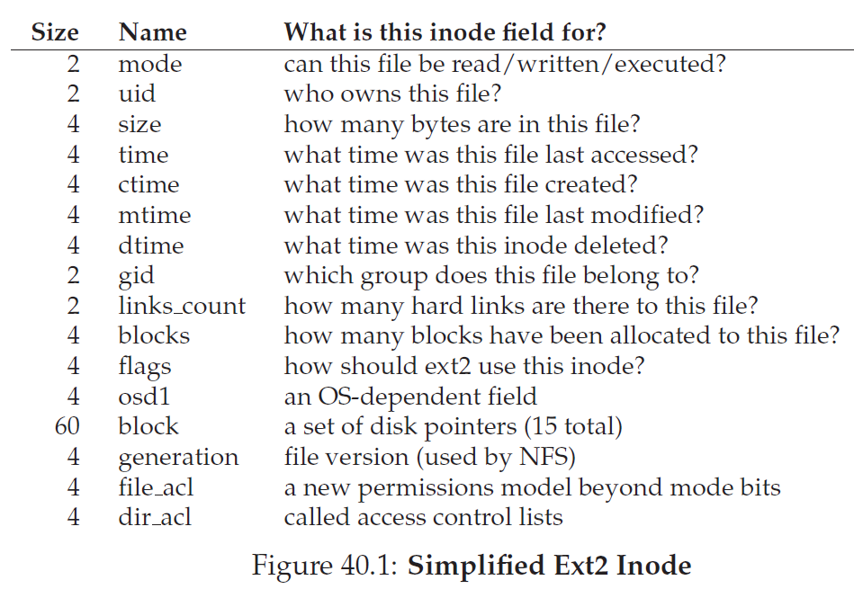

基本概念
每一个file都有一个low-level name， 一般我们指inode number,
directory：存储a list of pairs (user-readable name, low-level name)
UNIX/Linux的File System Hierarchy标准规定了文件系统目录树中各个目录的功能：
- /boot - 系统启动数据
- /bin - 应用程序 (bash, ps, grep, ...)
- /dev - 设备文件
- /sbin - 系统程序 (mkfs, fdisk, ifconfig, dhclient, ...)
- /etc - 配置文件 (= "etcetera")
- /home - 用户目录
- /lib - 库文件 (libc.so, libpthread.so, ...)
- /media - 可移动设备 (cdrom, USB flash ,...)
- /usr - 用户程序 (/usr/bin/, /usr/lib/, /usr/local/)
- /var - 可变文件 (logs, snapshots, ...)
- /tmp - 临时文件
File System Interface
Creating files
int fd = open("foo", O_CREAT|O_WRONLY|O_TRUNC, S_IRUSR|S_IWUSR);
O_CREAT :creates the file if it does not exist, O_WRONLY: ensures that the file can only be written to, and, O_TRUNC: if the file already exists, truncates it to a size of zero bytes thus removing any existing content
Reading And Writing Files
cat :dump the contents of the file to the screen.
...(还有一些 不想抄了)
Shared File Table Entries: fork() And dup()
dup() call allows a process to create a new file descriptor that refers to the same underlying open file as an existing descriptor.
Writing Immediately With fsync()
fsync(int fd). When a process calls fsync() for a particular file descriptor, the file system responds by forcing all dirty (i.e., not yet written) data to disk, for the file referred to by the specified file descriptor.
rename
rename(char*old, char *new), call is that it is (usually) implemented as an atomic call
Getting Information About Files
stat() or fstat()
Reading Directories
opendir(), readdir(), and closedir()
readdir()得到以下结构体： 
Hard Links
link() system call takes two arguments, an old pathname and a new one; when you “link” a new file name to an old one, you essentially create another way to refer to the same file. The command-line program ln is used to do this
link后的两个指向相同的inode number，对于文件系统而言，对用户可见的名字不同没有关系，因为他们指向相同的内部的结构metadata，这个是根据inode number来查找的
当你删除一个文件的时候，会调用unlink()，将检查对应inode number对应的reference count（link count），并将其减少1，只有其变为0的时候，才会free掉对应的数据结构
Symbolic Links(soft links)
The way a symbolic link is formed is by holding the pathname of the linked-to file as the data of the link file
Making And Mounting A File System
mkfs：give the tool, as input, a device (such as a disk partition, e.g., /dev/sda1) and a file system type (e.g., ext3), and it simply writes an empty file system, starting with a root directory, onto that disk partition.
mount完成的工作是把一个设备和一个文件系统实现联系起来，在设备上创建一个文件系统实例，并且把创建的文件系统“放置”到文件系统中的一个路径里。
文件系统实现
VSFS(Very Simple File System)
Overall Organization
我们假设以4kb为一个block，现在我们假设有一个非常小的disk，只有64个block，考虑其应该有的组成
a) 首先必然存储数据且应该是大部分block都存储数据
b）对于每一个文件，都应该有一个inode
c）需要有一个分配结构来追踪每一个data或者inode的block是否为free，有多种实现方式，如链表，此处采用bitmap的方式，每一个bit为0/1表示对应的block是否被占用，此处应有两个bitmap，data和inode各一个
d）一个superblock， 用于存储关于这个文件系统的信息，如有多少各inode和data blocks，inode table从哪里开始等（当挂载一个文件系统的时候，首先读superblock的信息来初始化各种参数）
File Organization: The Inode
Inode: index node
每一个inode都会被一个数字所指代（i-number），在操作系统中，给你这个数字，你可以直接计算出在这个磁盘中对应inode的位置
inode有多种存储方式，如下：
- 连续存储在文件系统中的某个区域，这样可以直接根据inode的编号计算出inode在磁盘中的位置，这也是实现文件唯一id的一个途径；（上图采用的方式）
- 存储在文件头部，文件唯一id = 第一个数据块的编号；
- 存储在目录文件中，文件唯一id = 第一个数据块的编号，在支持链接的文件系统中，文件的元数据会有多份拷贝。
在inode中，几乎存储了所有关于其对应文件的信息，我们将这些信息称为metadata,
包括
- 文件的唯一id；
- 文件的类型，用于区分普通文件和目录文件；
- 访问权限，就是大家熟知的rwxrwxrwx；
- 所有者信息 (uid, gid)，但这在跨系统访问时成为很大的麻烦；
- 文件大小；
- 文件访问的时间信息：创建时间、访问时间、修改时间；
- 链接数量 (刚才已经提到)；
- 一些其他信息，例如文件的第一个数据块的编号等
一种inode存储的信息示例如下：
在inode中有一个重要信息是指向文件data所在block的地址的指针，一种实现方式是采用direct pointer，但是这样对于较大的文件，存储在多个不同的block中时会比较麻烦，此时一种方式时采用indirect pointer,这个指针指向一个全部存储对应的direct pointer的block，而如果还要更大的话，则可以采用double indirect pointer(即指向一个全是indirect pointer的block)，如果还要更多，可以以此类推triple indirect pointer
Directory Organization
each entry has an inode number, record length (the total bytes for the name plus any left over space), string length (the actual length of the name), and finally the name of the entry.
目录同样被操作系统认为是一个文件，有对应的inode，只是inode中其类型为directory
Free Space Management
在vsfs中，用的是bitmap，还可以用链表来实现，现代操作系统中有更多的实现方式如b-tree
Access Paths: Reading and Writing
对于一个路径，如果我们想找到对应的文件或目录的inode值，其值一般会存储在其父目录中，而**/**没有父目录，故而一般在unix系统中设置其inode值为2，找到父目录的inode之后，就根据指针找到其data区域，在data中找到其对应文件的入口，找到后，文件系统就获取的该文件的inode number，之后类似的重复直到找到对应文件为止。在open（）操作中，找到文件后，会把文件的inode读入，并在pre-process open-file table中分配一个fd给这个process。
打开文件后如执行read操作，则会更新inode中的存储的时间变量，然后回更新fd对应的in-memory open file table，修改文件偏移量
如果要写文件的话，要先读inode，再读bitmap，再写bitmap，分配后再写data，写完后更新inode
FAT与ext2
断章了，见下一篇blog